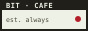

the coupon strip. real sites, linked out on purpose, with nothing tracked and nothing sold. read why in the webring is not dead, it is just resting.
melonland
one of the loudest, funniest personal pages left on the internet. glorious chaos, run with real love. this is a lot of where bit cafe's nerve came from.
visit melonking.net →ribo.zone
a personal site built like a laboratory: links, drawings, plants, bugs, whatever the owner felt like building that week. their own links page is exactly what a real button wall looks like: go see it firsthand.
visit ribo.zone/links →lost letters
a nostalgic tribute to early-2000s online girlhood, built accessible and tracker-free on purpose. proof that "indie" and "considerate" were never in tension.
visit lostletters →neocities
free, ad-free hosting for pages like this one. if any of this made you want to build your own corner of the web, this is where you'd actually start.
visit neocities.org →indieweb wiki
a community wiki for people building small, self-owned sites instead of renting space on somebody else's platform. dense, useful, unglamorous in the best way.
visit indieweb.org →hotline webring
an actual, currently running webring, not a directory pretending to be one: pick a slug, add a next/previous link, get pulled into the chain for real. this is the one from the note below.
visit hotlinewebring.club →update: found one. hotline webring is real, active, and actually joinable: dot_matrix just hasn't gotten around to registering bit cafe yet. know an even better one? tell us in the guestbook.
hand-made badges, each one its own color, layout and little animated icon, the way a real button wall looks: not the sites' own art (we don't have their files, and wouldn't reuse them without asking), just tribute buttons bit cafe drew and animated itself. every one of them actually goes there.
got a site that belongs here? file a request and dot_matrix will read it by hand. this doesn't publish automatically: real fits get added to the wall manually, the same reason bit cafe won't auto-join a formal ring above.
README.md, "connecting the till."

swap the href for wherever you end up hosting this site, save the badge image alongside your page, and it's yours. click the code to select it.